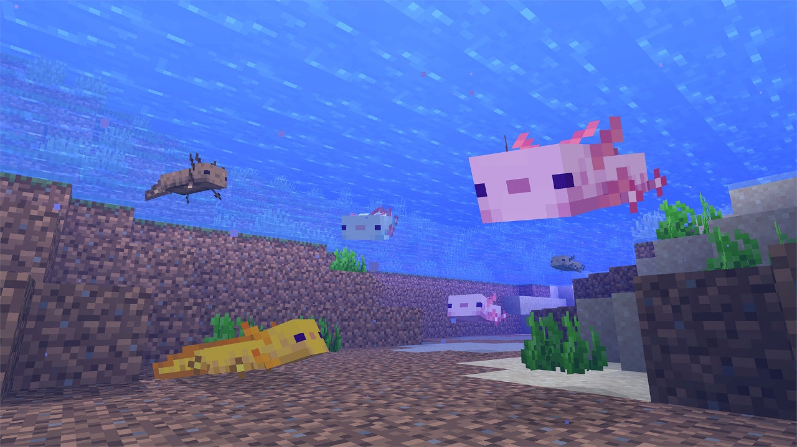
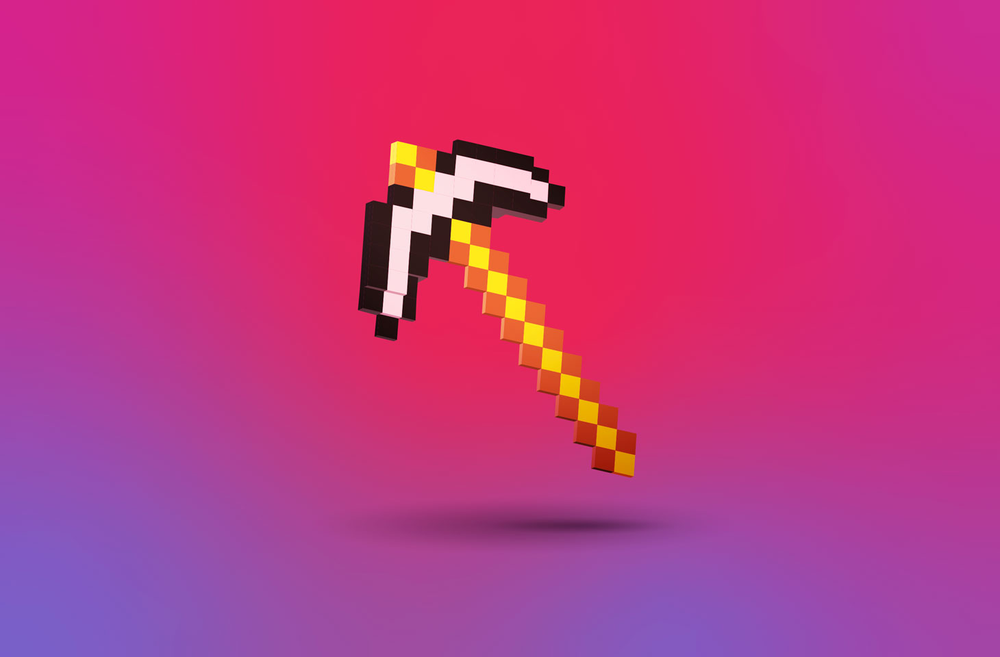
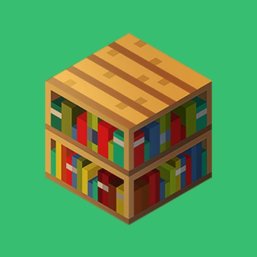
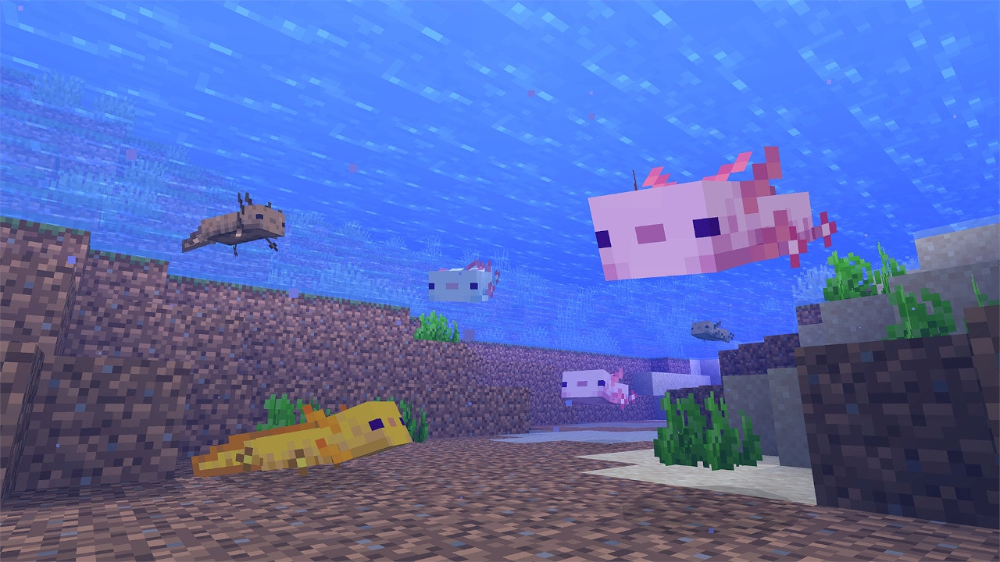
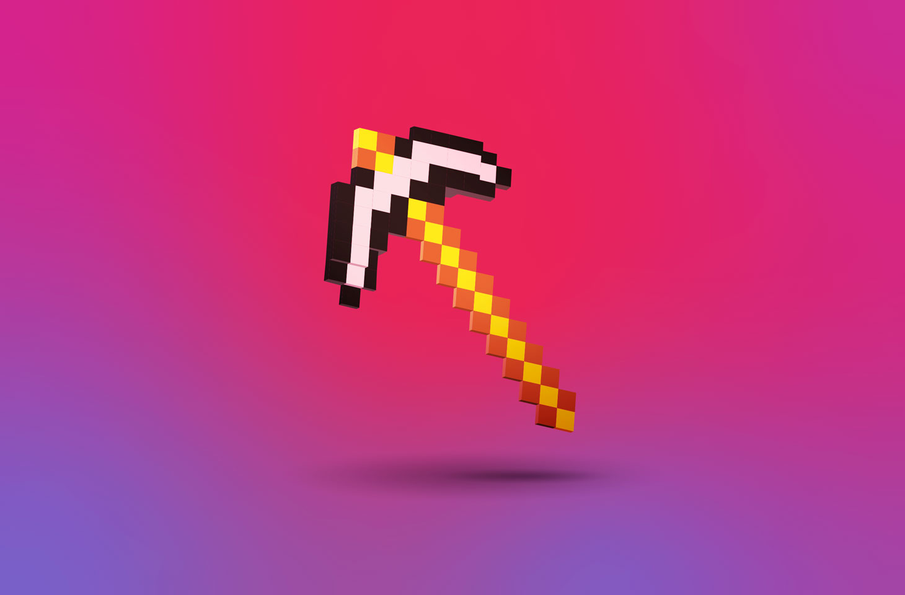
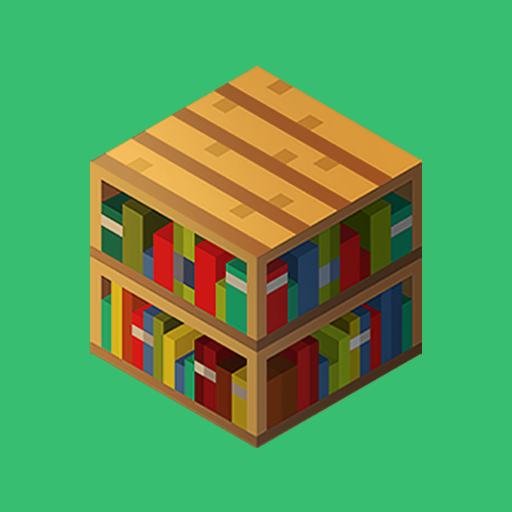

Minecraft est un jeu de type bac à sable, c'est à dire qu'il intègre des “outils” pour façonner son propre univers de jeu. Ainsi , le joueur peut à peu près bâtir tout ce qu'il veut. Il existe différents modes de jeu dans lesquels la partie aventure et la partie créative sont plus ou moins développées.
Minecraft est à l'origine développé pour être un jeu sur navigateur Web, puis sur Windows, Mac et Linux (à l'aide de Java)3. Un portage sur téléphone mobile existe également, Minecraft Bedrock Édition, sortie sur les smartphones Android, sur les terminaux iOS, les appareils Windows Phone et est disponible sur Windows 104,5. Une version pour Xbox 360 est sortie le 9 mai 2012, développée par 4J Studios6. Une version PlayStation 3 développée par Mojang est disponible depuis le 18 décembre 20137. La version PS4 est sortie le 4 septembre 2014 sur le PlayStation Store, la version Xbox One est publiée le lendemain tandis que la version Wii U est disponible en téléchargement sur le Nintendo eShop depuis le 17 décembre 2015 et en version physique depuis le 30 juin 20168. La version Nintendo Switch est sortie le 12 mai 2017 et la version pour New Nintendo 3DS le 14 septembre 20179. En mai 2020, Minecraft a passé la barre des 200 millions d'exemplaires vendus sur toutes les plateformes10, ce qui en fait à la fois le jeu vidéo le plus vendu de tous les temps et la septième franchise la plus vendue de tous les temps, avec une communauté de 126 millions de joueurs actifs par mois en mai 20201
Quel est l'intérêt de Minecraft ? Le principal atout de Minecraft est sa durée de vie, qui est quasiment infinie : en effet, vous pouvez tout faire dans le monde de Minecraft qui est généré aléatoirement. Vous pouvez construire de gigantesques châteaux, créer des villes, fabriquer des systèmes en redstone
Quel est le but d'une survie Minecraft ? Résultat de recherche d'images pour "minecraft principe" Le mode Survie est un mode de jeu de Minecraft dans lequel les joueurs doivent collecter des ressources, bâtir des structures, combattre des monstres, gérer leur faim et explorer le monde pour survivre et prospérer, en solo ou en multijoueur.
Impossible de passer à côté du jeu PC Minecraft. Pourtant, après toutes ces années, vous n’avez toujours pas compris le principe ? La rédaction vous explique tout. Partager Tweeter Mail “Un joueur de Minecraft reproduit le château de Poudlard à l’identique”. Vous avez sans doute vu passer cette information une fois dans votre flux. Que ce soit en reconstruisant l’école du célèbre sorcier, une capitale du monde ou encore des décors de la trilogie du Seigneur des Anneaux, les joueurs du célèbre jeu PC se sont illustrés par leur créativité et une patience sensiblement sans borne. Au fond de vous, vous savez que Minecraft existe. Pourtant, vous n’avez jamais compris son principe. Comment ça marche, quel est le but du jeu, nous vous expliquons tout et peut-être, cela créera une nouvelle vocation ! C’EST QUOI MINECRAFT ? À l’origine, Minecraft est un jeu de survie. Vous vous retrouvez projetés dans un vaste Open World, ou monde ouvert, sans aucune ressource. Le but est donc de rester en vie. Pas évident quand on n’a rien du tout. Il faut donc récolter des ressources et les associer pour en obtenir de nouvelles. De la même manière qu’une paire de ciseaux associée à une feuille vous donne une feuille découpée, en combinant des ressources primaires, vous obtenez des ressources secondaires. Partis de rien, vous voilà maintenant avec des pioches, des épées, et autres outils pour en avoir des meilleurs. Le joueur évolue donc dans un petit monde, dans lequel le but est d’aller toujours plus loin. Mais vous n’avez probablement pas oublié que l’objectif premier est de survivre. Et s’il faut survivre, c’est qu’on peut mourir. Dans votre petit monde, on trouve aussi des monstres. Il faut donc être correctement équipé pour les défaire et rester en vie. Dans son évolution personnelle, par exemple, en construisant une pioche à partir de planches, le joueur pourra ensuite chercher du fer dans des mines pour se créer des armes et protection. Mais il ne faut pas oublier de se nourrir et donc se consacrer à la culture, la chasse, et autres activités du genre. Minecraft, c’est comme dans la vraie vie. Il n’y a pas vraiment de but, il faut juste rester en vie le plus longtemps et faire en sorte que tout se passe bien. Sauf que dans le jeu, tout se passe en forme de gros cubes pixélisés. MINECRAFT DÉPASSÉ PAR LA CRÉATIVITÉ Le concept original de Minecraft est donc très fort. Le but n’est pas simplement de survivre de manière complètement linéaire. Il n’existe pas un chemin tout tracé que vous devez suivre. L'objectif est de rester en vie en vous servant de votre imagination et de votre créativité comme d’une arme. Vous seul décidez si vous voulez vous fabriquer un château ou un parc d'attractions ou simplement résider dans une petite cabane au bord du lac. Le jeu ne comporte presque aucune limite. À l’exception des ressources que vous possédez. À moins que vous passiez en mode créatif ! Les développeurs l’ont bien compris, si le côté survie séduit énormément, c’est principalement le penchant créatif qui fait la force du jeu. Ils ont donc choisi de concevoir un mode dans lequel vous avez un accès illimité aux ressources et vous n’avez pas à être inquiété par les monstres qui font simplement partie du décor. Armé de votre imagination débordante et d’une infinité de moyens, vous voilà désormais en mesure de construire tout ce que vous désirez. Un peu comme si vous jouiez aux Lego, avec une quantité illimitée de briques et surtout, pour des constructions qui ne prennent pas toute la place dans votre chambre. Aucune limite ne vous retient, c’est la liberté absolue. C’est là que les joueurs se sont mis à devenir complètement dingues et à fabriquer des oeuvres dignes de la chapelle Sixtine. À ce stade là, ce n’est plus que du jeu-vidéo, c’est de l’art. Des créations aussi complexes que détaillées, des reproductions, des constructions originales, il y en a pour tous les goûts. Et c’est notamment ce qui a donné sa grande popularité au jeu. À tel point qu’un mode en ligne a été créé, que le jeu a été porté sur PlayStation, Xbox et sur les consoles Nintendo. Des extensions ont aussi été mises en vente, le tout, à des prix variables. Minecraft réussit ainsi un véritable compromis entre gaming, art et liberté la plus totale. Vous vous trouvez dans un jeu où vous faites absolument ce que vous voulez. Les développeurs ont mis des briques à votre disposition, à vous de faire votre propre jeu et de créer votre propre expérience. Et vous n’êtes pas forcés de fabriquer des palaces grandiloquents. Si vous désirez vivre dans une cabane sans fenêtres au milieu du désert, c’est votre choix. C’est la liberté. C’est Minecraft.
 




